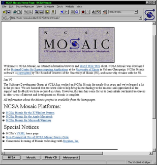
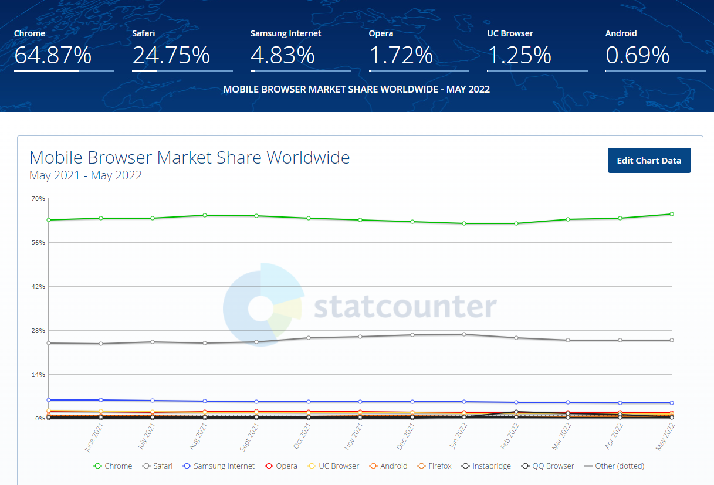
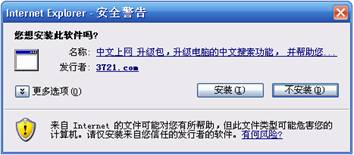
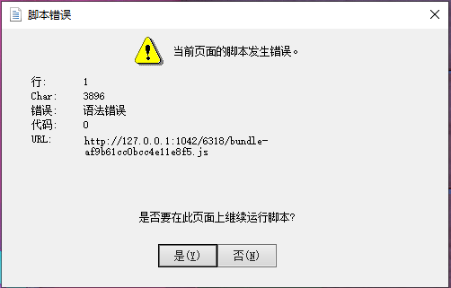
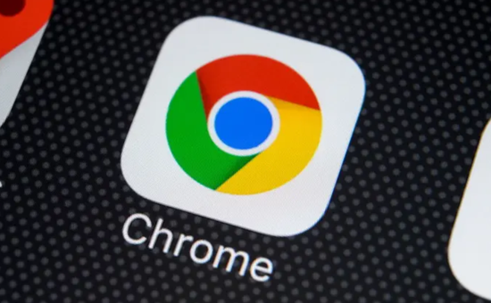

我最早接触IE的时候， 是2000年， 那年我20岁，想想，已经是22年过去了。 当年网吧里的操作系统是win98，IE5是这个操作系统的默认浏览器。 IE的图标是一个蓝色的e字符， 也是我当年用的最多的软件， 我用它进入我们当地的网络聊天室， 网络聊天室里有来自本地的各个小伙伴。 还用它浏览，新浪， 网易，搜狐等门户网站。 甚至还能浏览yahoo等， 海外网站， 这一切神奇的东西让我惊喜不已。 后来才知道，这就是大家所说的上网冲浪。 IE绝对是上网冲浪的重要软件。
在这里，我们先简单的介绍一下IE浏览器的历史。 ie在当年，并不是唯一的浏览器， 还有比它更早的浏览器，不过都被他打败了。
1993年，世界上第一款真正意义上的浏览器Mosaic诞生了。

1994年美国的网景通信公司发布了网景浏览器的1.0版，该浏览器迅速的夺取了市场的主导权。随着后续版本的发布，网景浏览器甚至达到了90%的市场占有率。

javacript语言就是当时为了用户跟浏览器的互动而开发的计算机语言。据说作者Brendan Eich花了10天时间就设计了这门语言。 我估计他想破头也未曾想到这门随便设计的语言最终会发展成为当今最流行的语言之一。
IE由于是免费的，而且是默认安装的。最终网景的浏览器市场份额逐步被蚕食。
1995年网景上市，第一天股价就暴涨了三倍，这引起了微软的担忧。微软开始介入了浏览器大战。 微软购买了Mosaic的源码，基于Mosaic开发了自己的浏览器Internet Explorer。 在这场大战中微软充分的利用了自己操作系统垄断地位的优势，依靠Windows95+IE的销售方式直接打垮了网景的垄断，而紧随其后的Windows 98捆绑IE4的做法更是直接要了网景的命。 在这场浏览器大战中，最终微软利用自己的操作系统优势击败了网景。
1998年1月，网景浏览器开始免费，并开放源代码，并成立了Mozilla基金会。 值得一提的是: 2004年11月9日火狐浏览器Firefox 1.0版正式发行，这是Mozilla基金会基于之前netscape的源代码，开发的新一代浏览器。至此开启了IE的消亡之路。当然，这是后话。 1998年11月24日，美国在线以42亿美元、免税换股的方式，收购网景。 2001年8月，IE6发布。 2003年 IE浏览器市场占有率达到了巅峰: 95% 正由于没有了对手，微软没有了更新浏览器的动力，到下个版本的浏览器IE7的发布，已经是2006年10月了，时隔五年， 中间没有任何新版本的浏览器发布。 我一度以为微软解散了IE的开发团队， 而事实也却是如此，当你把所有的对手都打趴下了， 还浪费时间跟金钱去改进浏览器，对于当时的微软来说，确实意义不大。 最后IE7, IE8, IE9, IE10 , IE11, Edge相继被开发出来 但是已经挽回不了微软在浏览器市场的颓势，Google的Chrome一骑绝尘。 分析机构StatCounter公布2022年5月世界上最流行的浏览器数据分析结果。 数据显示在移动浏览器领域Chrome以64.87%的市场份额继续保持无可争议的领先地位 全部市场(移动+桌面)谷歌Chrome占有率为64.95%

2015年7月29日发布的IE11是最后一个IE版本，后来的windows中搭载的浏览器，就是Edge了。

正是由于微软捆绑了浏览器，所以美国政府开始对微软进行反垄断调查。 有些年份的老网友，应该还记得，当时的文件管理器跟浏览器是可以互相变换的。 在文件管理器里输入网址，文件浏览器会被成浏览器。在浏览器地址栏输入本地文件路径,浏览器会变成文件管理器。也就是说，浏览器跟操作系统是合为一体的。 比尔盖茨在答辩的时候，就是利用这个，说是浏览器是操作系统的一部分，而不是单独的软件，最后打赢了官司。
IE浏览器的缺点，真的是罄竹难书，我在这里写一些最让人痛恨的缺点。
IE6没有标签浏览功能， 访问一个网站，就需要打开一个窗口， javascript语言也能弹出新的窗口。 这导致了这个功能被滥用， 基本上都是弹出广告，有甚者一个网站可以弹出10来个小窗口，全是广告。 是广告还是良心了， 更有甚者， 弹出一些少儿不宜的内容， 如果这时候边上正好有其他人，那叫一个尴尬。 某些恶意网站，甚至可以让用户关闭不了浏览器，一直把人留住， 可以在关闭浏览器的事件里，添加弹出新窗口的代码。 这样用户在刚关闭一个浏览器窗口的时候， 另外一个新窗口又被弹出了。防不胜防。 我在这里插一段小故事:
以前的网络聊天室有把人提出聊天室的功能，还有弹出无数弹窗的功能，让用户的电脑死机，必须硬件重启才行。 当时的聊天室可以挂机在聊天室，就可以获得积分，然后可以根据积分，升级用户等级。 有一个哥们半夜挂在聊天室，赚积分。然后不知道管理员发了什么神经，把这哥们踢出聊天室，弹了无数窗口。 最终，这哥们早上起来的时候，发现电脑烧坏了。
但是，那也是那些个人网站最赚钱的年代。 要知道，每弹出一个广告，那可都是钱啊。 当然，现在的浏览器，通过脚本是弹不出窗口了，只有用户有操作的时候，才允许弹出窗口，这已经是相当严格了。

IE有这么个功能，使用object标签，可以内嵌一些其他组件(ActiveX)，比如银行，会用自己的控件替代浏览器的输入框，防止键盘输入被窃听。 浏览器还可以运行VBScript, 然后通过vbscript创建shell, fsobject，等等。 只要用户不小心点击了确定，那就是意味着网站能任意访问创建本地文件了， 所以说，访问了一个网页，中了病毒，真不是开玩笑的。 虽然以上功能很强大，但是，更多的是被滥用。 浏览器的这种安全问题，也成就了一些网站或者公司。 比如臭名昭著的3721中文上网。 曾经有一段时间，只要打开浏览器上网，就会弹出一个3721的插件安装提示。 3721是什么？老的网友，应该有记忆。这个是一个由现任360公司董事长周鸿祎创办的中文上网插件，提供输入中文直达网站的功能。 比如在地址栏里输入新浪，会直达新浪，而不需要输入全部域名。 他就是依靠出售中文直达的功能赚钱。 本来这也无可厚非，但是3721的推广方式，太流氓了。 当年很大部分网站都做了3721的推广， 只要打开网站，就会弹出一个安装3721的弹窗， 只要你一不小心点了确定， 那么，恭喜你， 你的浏览器上就多了一条工具栏。 最夸张的时候，我的浏览器，有三四条莫名其妙的工具栏。 安装之后，想要删除这个工具栏，对不起，删不掉。 正由于这种流氓方式推广自家软件，因此周鸿祎被称为流氓软件之父。 讽刺的是，3721后来卖给了雅虎，而周鸿祎则创办了后来的360杀毒。 这时候令人啧啧称奇的操作来了，360会把3721判定为流氓软件， 这个操作，我也是服了。
曾经的一些网站也受益于ie的安全问题，比如流量巨大的hao123网站，就是被百度收购了的那个网址导航网站。 当年的崛起，也离不开一些流氓行为，比如： 用户只要进入了hao123网站， 该网站就会未经用户同意的情况下自动把自身添加进收藏夹，自动设置浏览器的首页。而且还改不回来。 这个操作虽然流氓，但是确实有效，当年这个不起眼的网站，可是各个网吧电脑浏览器的默认首页。据说它的流量直逼当年的三大门户网站。
现在的浏览器，已经无法用脚本添加网页进收藏夹了，也不能设置成主页了。
那些年我也写过一些个人项目， 在网页里插入了读取剪贴板的代码，并且将内容用ajax上传到网站。 (当然，我的网站访问量很小，也只是作为好奇，作为测试而已，后来代码被移除了，并没有干什么坏事。) 这是一个很可怕的功能， 有些用户剪贴板可能保存了一些重要的信息， 就这样被上传到了网站上， 后果真的不堪设想。 另外， IE可以用小本直接模拟一个文件上传控件点击, 然后会弹出一个文件选择对话框，这个时候，如果你选择了一个文件。 那么这个文件就很可能会在你不知情的情况下，直接被上传到了服务器。 现在的浏览器都是无法用脚本模拟文件上传控件点击了。
我简单列举一些:

我上面曾提到，IE6发布直到到IE7发布，时隔五年， 中间没有任何新版本的浏览器发布(只发布了两个补丁包)，那也是网站开发者黑色的日子，我想，每个网站开发者都痛恨IE6。

好在随着Firefox的诞生，Google Chrome的崛起，这一切都变了。 我清楚的记得，当年Firefox推广初期， Google 大力支持， 甚至推出推广计划， 让各大网站提供下载， 每下载一个火狐浏览器， 就给网站主广告费， 当年我也做过，这极大的推动了Firefox的普及。 Goole推广Firefox这个情况，直到Google自己的Chrome发布之后， 才逐步停止。 在Google跟Mozilla的不断努力下, IE后来沦落到成为用来下载其他浏览器的浏览器: 用户新装系统的第一件事可能就是打开IE浏览器然后去下了一个Chrome浏览器。 到目前为止，IE的浏览器的市场份额已经跌到1%以下了。确实存在的意义已不大。
现代的浏览器基本是Chromium的天下 使用了Chromium内核的微软的Edge浏览器已经替代了IE浏览器了，连那个小众浏览器Opera也使用了Chromium内核了。 目前了拥有独立内核的浏览器，分别是火狐(Gecko内核)， Safari(webkit内核), 还有是基于chromium系了。 时代在不断的进步，IE这个时代的产物，也走到了尽头，完成了它的历史使命。 虽然我痛恨IE，但是，它也承载了我的青春，让我们好好的跟它告个别吧。